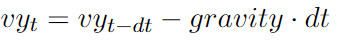
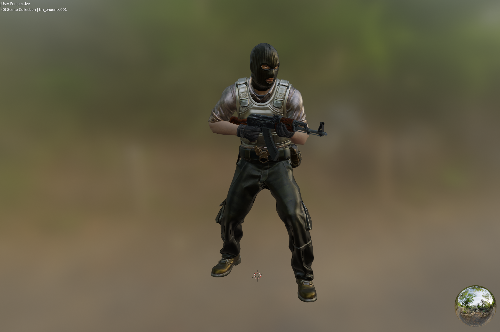
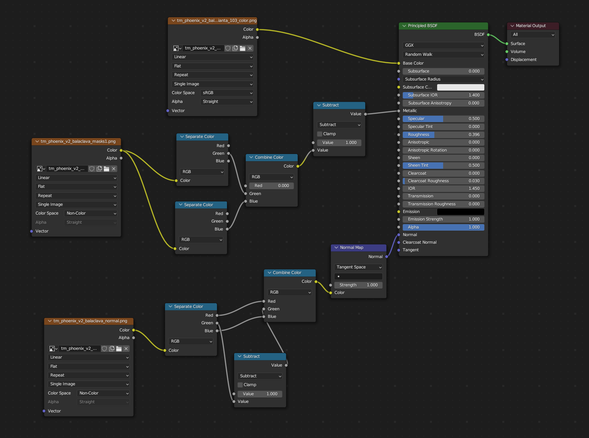
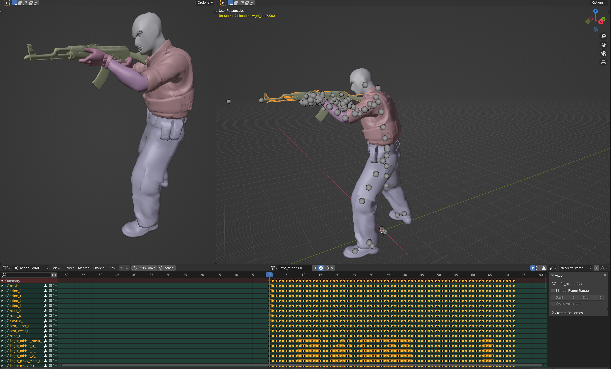
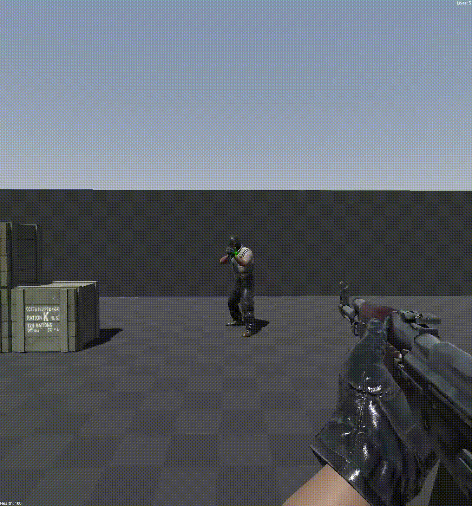
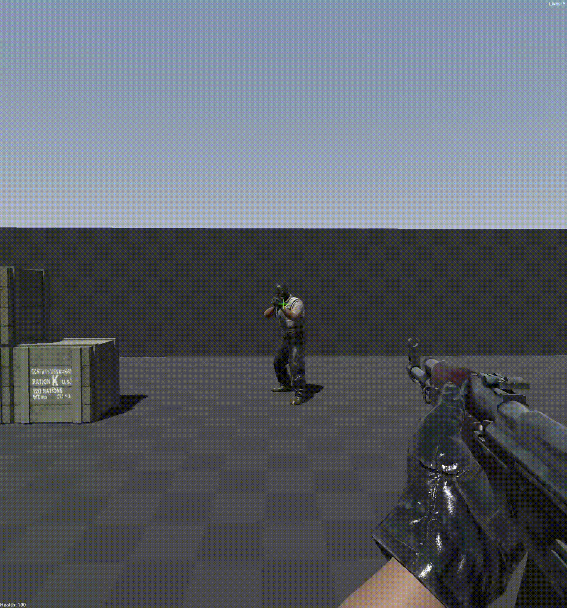

Summary
CS:GODOT is a realtime multiplayer first person shooter game, inspired by the recent announcement of Counter-Strike 2. In the announcement, it was revealed that Counter-Strike 2 would introduce volumetric smoke grenades. This was a vast improvement over the previous game, Counter-Strike Global Offensive. After hearing this announcement, we felt inspired to implement something similar. CS:GODOT is a deathmatch style game that allows players to shoot and throw smoke and frag grenades. The smoke grenades create volumetric smoke that the player can interact with. We relied on kinematic equations for player movement and grenade trajectories. We textured and animated character models using Blender. Using Godot’s Volumetric Fog, which is based on Wronski’s “Volumetric Fog: Unified Compute Shader-Based Solution To Atmospheric Scattering”, we created fog volumes and added textures and shaders to make it look realistic.
Kinematics
In order to handle player input and simulate semi-realistic movement, we relied on kinematic equations and Godot’s move_and_slide function, which handles bouncing and sliding, given an input velocity. More specifically, we found the direction moved for a given timestamp and calculated the velocity based on the direction and a set speed. To account for acceleration and to make the movement smoother, we linearly interpolated the calculated velocity with the past timestamp’s velocity, using acceleration as the weight. To find the direction the player is moving in, we utilized Godot's built in transform basis.
direction = Vector3(0, 0, 0)
if move_forward:
direction -= transform.basis.z
elif move_backward:
direction += transform.basis.z
if move_left:
direction -= transform.basis.x
if move_right:
direction += transform.basis.x
We handled jumping by increasing the velocity in the y-axis and applying gravity to ensure that the player would land again. When the player jumps, we set their velocity in the y-axis to our defined jump velocity. To apply gravity, we apply the following equation:
To handle throwing grenades, we utilized Godot’s RigidBody3D object, which makes it easy to apply 3D physics. We first found the current position of the player and from that position, we spawned a grenade instance and called Godot’s apply_impulse function, which applies a force in a specified direction.
Texturing
We were able to find the actual models used in CS:GO by decompiling the game’s resources and importing them into Blender. We were also able to find the textures used using the same process. However, this meant that we had to manually texture the models ourselves. Luckily, one of our members had experience in texturing 3D models in the past. Utilizing what we learned in class, we utilized BSDF materials, bump maps, and bilinear filtering in Blender to create realistic renders of the player and weapon models.
 Animating
We implemented the weapon reload and death animations in Blender to provide a more realistic feel to our game. This was accomplished by utilizing Blender’s rigging and animating system. We utilized Blender’s armature object, which allows us to apply “bones” to certain portions of the model so that we could control them during animating. Then we created keyframes for certain parts of the animations and then interpolated the in-between frames using Bezier interpolation.
 
